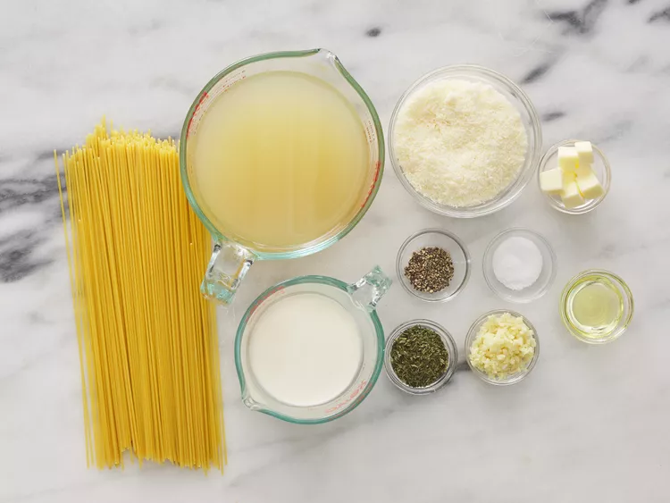
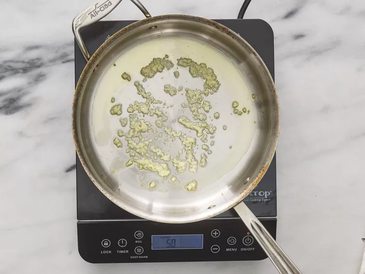
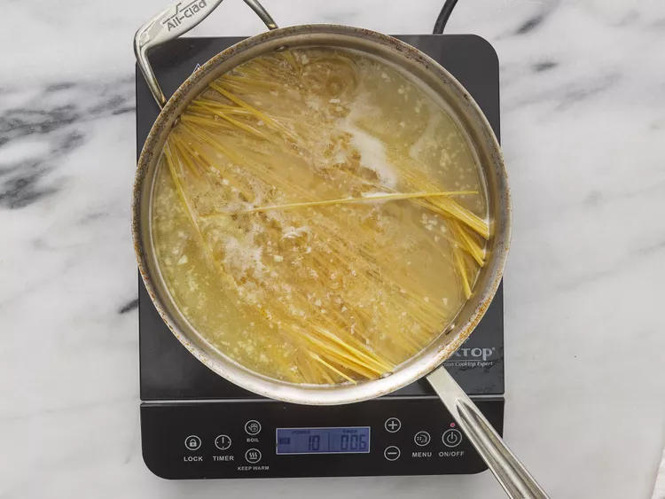
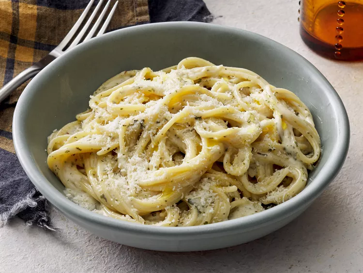

Creamy Garlic Pasta
Every strand of spaghetti is perfectly coated in a rich sauce of garlic, cream, and Parmesan.
This will make about 4 servings.
Ingredients
- 2 teaspoons olive oil
- 4 garlic cloves, minced
- 2 tablesppons butter
- 3 cups chicken broth, or more as needed
- 1/2 teaspoon ground black pepper
- 1/4 teaspoon salt
- 1/2 pound spaghetti
- 1 cup grated Parmesan cheese
- 3/4 cup heavy cream
- 1 1/2 tablespoons dried parsley
Instructions
- Gather all Ingredients

- Heat olive oil in a medium pan over medium heat. Add garlic and stir until fragrant, 1 to 2 minutes. Add butter and stir constantly until melted.

- Pour in 3 cups chicken broth; add pepper and salt. Bring to a boil. Add spaghetti and cook, stirring occasionally, until tender yet firm to the bite, about 12 minutes. Add more chicken broth if pasta starts to stick to the pan.

- Add Parmesan cheese, cream, and parsley and mix until thoroughly combined. Serve immediately.

This recipie was adapted from Online Cookbok